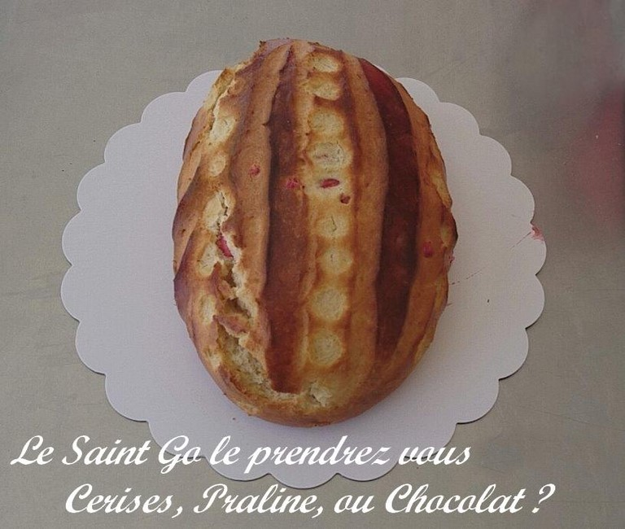

Pognes et St Go, produits culturels et de terroir.
OÙ QUE VOUS SOYEZ LE TERROIR OCCITAN S' INVITE DANS VOTRE ASSIETTE !
FARINE AU BLE ANCIEN BIOLOGIQUE

Deux gourmandises : Pognes ou St Go. Quoi prendre ? Deux Pognes ? Deux St Go ? Une pogne et un St Go ? ... bref, c'est à vous de choisir et c'est par là PASSER COMMANDE